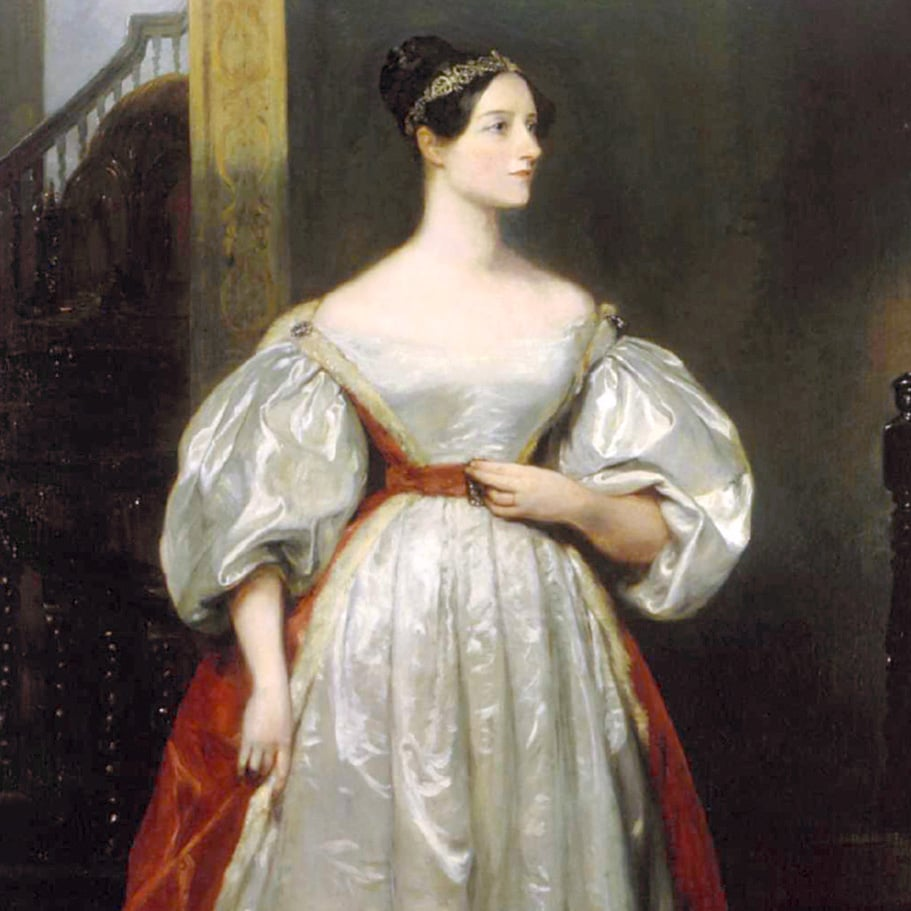

Influenciada desde cedo por sua mãe, uma matemática obstinada que temia que à filha virasse uma sem futuro como o pai poeta, Ada criou o primeiro algoritmo para ser lido por uma máquina, esta por sua vez chamada de Máquina Analítica, criada por Charles Babbage.
Juntos eles criaram o primeiro conceito de um computador programável. Ada traduziu as notas de babbage para que ele apresentasse o projeto durante um seminário na Universidade de Turim, e junto a elas, adicionou suas próprias anotações, juntamente com seu algoritmo de funcionamento. A construção da máquina analítica nunca foi possível por limitações de época.